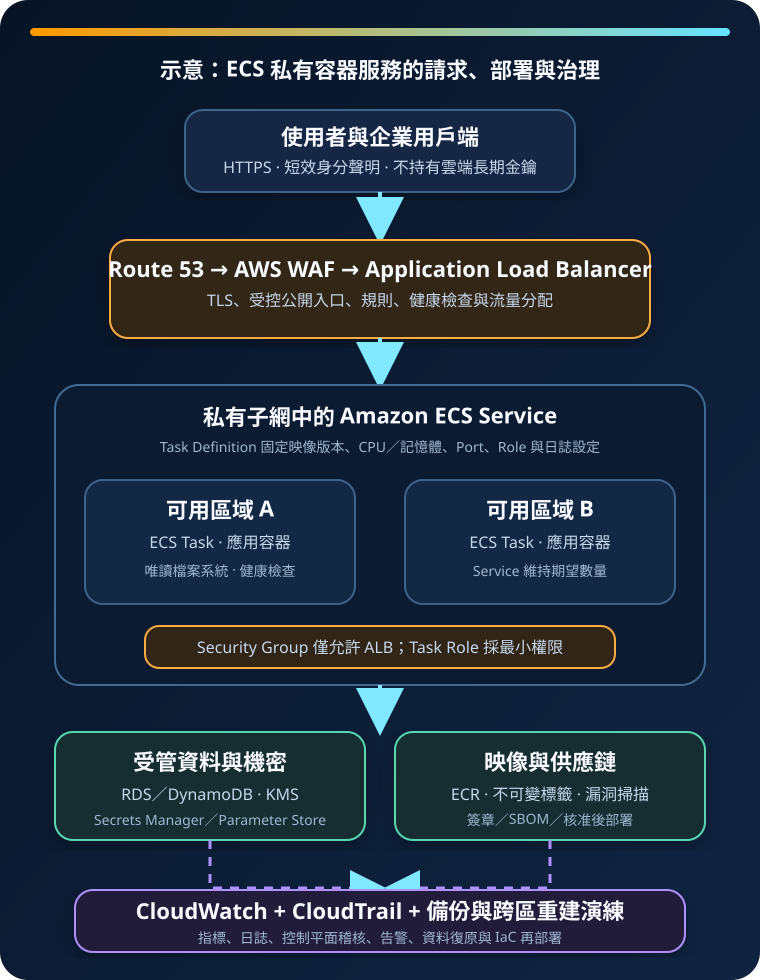
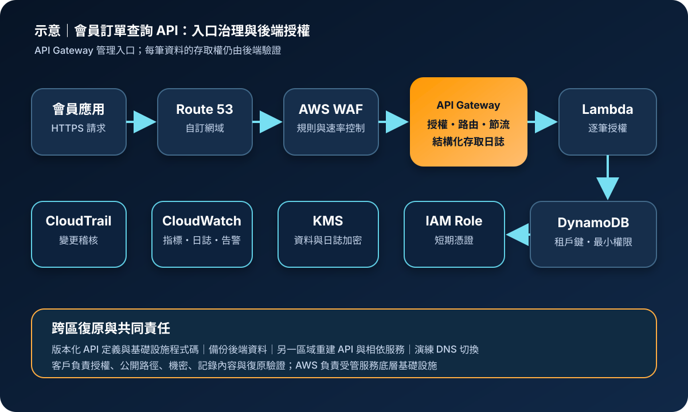
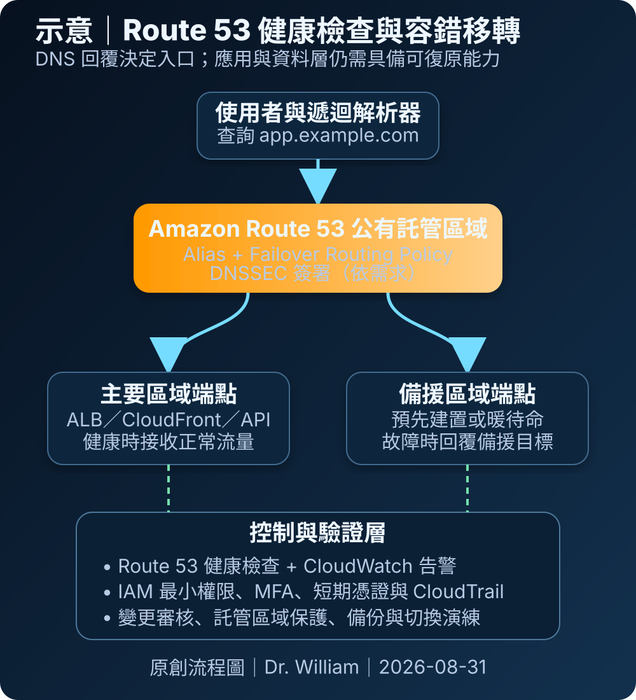
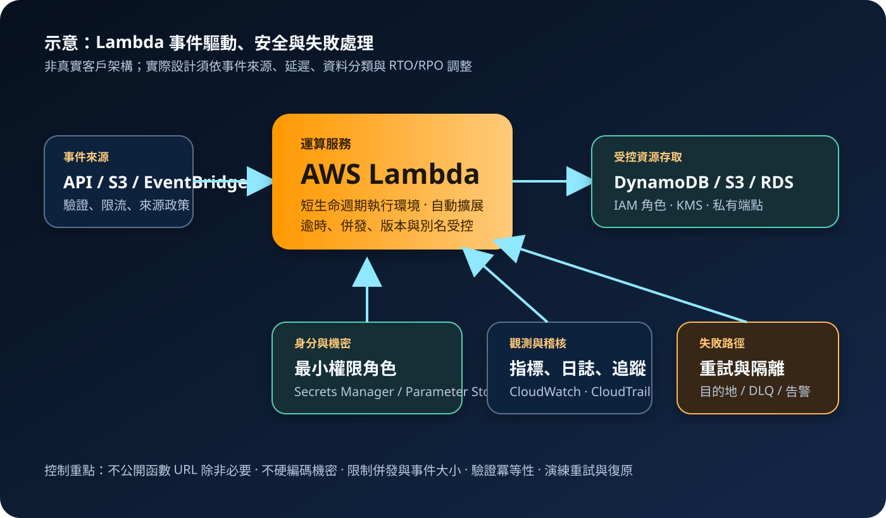
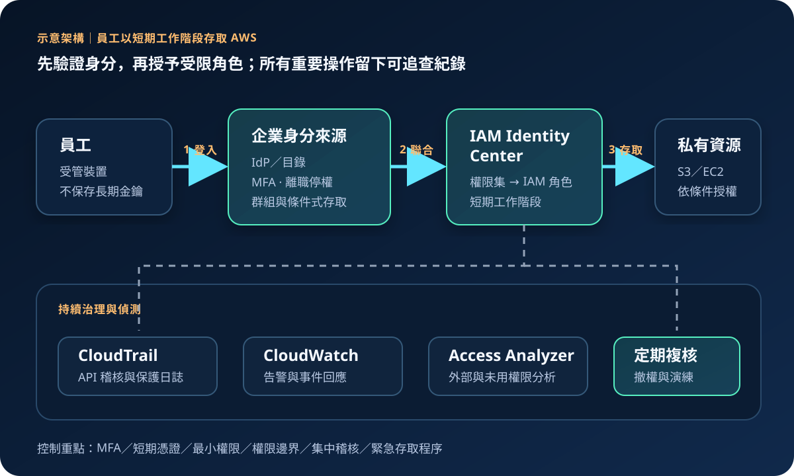
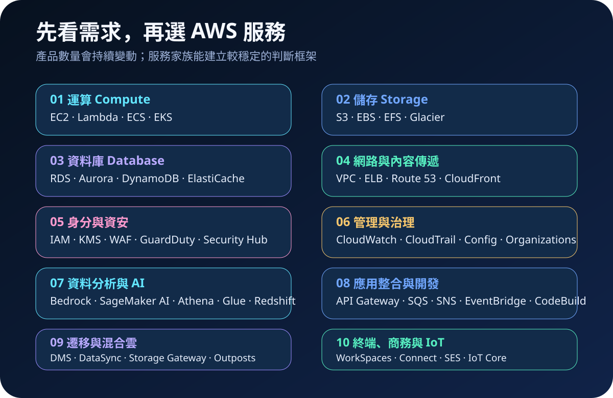

2026-09-04 · AWS 基礎介紹 14
Amazon ECS：容器編排、部署與工作負載隔離
理解叢集、Task Definition、Service、容量選項、網路隔離、映像供應鏈、成本與跨區復原。
閱讀全文 →
2026-09-03 · AWS 基礎介紹 13
Amazon API Gateway：API 入口、授權與流量治理
理解 API 類型、路由、授權、節流、私有整合、記錄風險、成本與跨區復原邊界。
閱讀全文 →
2026-08-31 · AWS 基礎介紹 10
Amazon Route 53：DNS、健康檢查與流量路由
理解權威 DNS、Hosted Zone、Alias、路由政策、DNSSEC、安全邊界與跨區復原。
閱讀全文 →
2026-08-29 · AWS 基礎介紹 08
Amazon EBS 與 EFS：區塊與共享檔案儲存
比較區塊與共享檔案儲存，理解效能、加密、網路隔離、備份、成本與跨區復原責任。
閱讀全文 →
2026-08-28 · AWS 基礎介紹 07
AWS Lambda：事件驅動的無伺服器運算
從事件、執行環境與併發，理解權限、機密、成本、重試、觀測及跨區復原責任。
閱讀全文 →
2026-08-27 · AWS 基礎介紹 06
Amazon RDS 與 Aurora：受管關聯式資料庫
從引擎、Multi-AZ 與複本，理解私有存取、加密、成本、備份及跨區復原責任。
閱讀全文 →
2026-08-26 · AWS 基礎介紹 05
Amazon VPC：子網路、路由與網路隔離
從位址、子網路與路由，理解公開邊界、Security Group、端點、成本及跨區復原責任。
閱讀全文 →
2026-08-25 · AWS 基礎介紹 04
AWS IAM：身分、角色與最小權限治理
從身分、角色與政策評估，建立 MFA、短期憑證、最小權限及可稽核的 AWS 存取流程。
閱讀全文 →
2026-08-24 · AWS 基礎介紹 03
Amazon S3：物件儲存、存取治理與資料復原
從物件與儲存類別，理解成本、可用性、公開存取、加密、版本與跨區復原責任。
閱讀全文 →
2026-08-23 · AWS 基礎介紹 02
Amazon EC2：虛擬伺服器、選型與安全責任
從執行個體、AMI 與 EBS，理解適用邊界、成本、高可用及主機安全責任。
閱讀全文 →
2026-08-22 · AWS 基礎介紹 01
AWS 有哪些服務？從需求地圖理解雲端服務家族
用三張圖整理服務家族、小型電商使用情境與共同責任，建立後續逐一學習的地圖。
閱讀全文 →